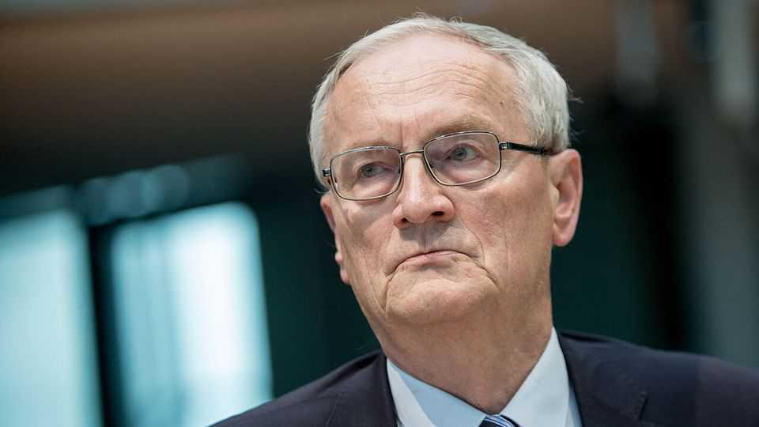

An explosive allegation rocks Germany’s spy agency
Its former chief is accused of passing on classified information to foreign agents

Oct 8th 2026
ON OCTOBER 5TH Martin Jäger, head of the Bundesnachrichtendienst (bnd), Germany’s version of the cia, sat before lawmakers and solemnly proclaimed the importance of trust between intelligence agencies. What Mr Jäger knew then, and what the world learned one day later, is that the bnd was sitting on an explosive scandal that risks torpedoing its already poor reputation just as the Bundestag prepares to grant it sweeping new powers.
Early on October 6th police arrested August Hanning, one of Mr Jäger’s predecessors, and a man named as Manfred D. Among other crimes, they were suspected of “treasonous espionage”: procuring classified bnd information with the intention of passing it on to foreign agents.
The allegation is that Mr D, who served as chief of staff to Mr Hanning and his successors, passed nearly 2,000 documents to his former boss between 2010 and 2022. Prosecutors say that Mr Hanning, who after leaving the bnd in 2005 went on to work as a security consultant, used the material to compile a briefing for someone from a foreign intelligence service (Azerbaijan’s, according to the German press); and maintained links with an agent from another. Some of the information, prepared for briefings in the chancellery, is said to have covered sensitive matters like Iran’s nuclear programme. Mr Hanning denies passing on classified information to Germany’s detriment, or for payment.
It is not unusual for spy chiefs to take on private consulting work after leaving office, but Mr Hanning had attracted an unusual degree of attention. The alleged leak came to light only because police in Hamburg investigating a separate case, involving Christina Block, the heiress to a steakhouse empire who is standing trial for orchestrating the abduction of her children from their father in a custody battle, found the material during a search of Mr Hanning’s property last year. They passed it on to federal prosecutors. Mr Hanning had been drawn into the case after allegations that he helped facilitate a previous abduction attempt by connecting Ms Block to private Israeli security operatives. Mr Hanning’s long-running ties to the Israeli security establishment are well known, although he denies involvement in the Block case. No charges have been brought.
That was not all. In 2017 Mr Hanning joined the board of a Latvian bank, owned by a Russian financier, that later went bust. Mr Hanning, who enjoyed a generous state pension after leaving the bnd, was sued for damages worth millions by the insolvency administrator. A court ordered the seizure of his assets. After his arrest this week, several lawmakers called for a ban on senior intelligence officials taking on potentially risky consulting or lobbying posts after leaving office.
The allegations would be damaging at the best of times. But the bnd is about to have its powers significantly expanded, and its budget is ballooning. Its years-long failure to spot a mole at the top of its organisation will hardly reassure spooks in allied countries who have long lamented its sloppiness and unprofessionalism. “Absolute trust is the currency in the intelligence sector,” says Marc Henrichmann, who chairs the Bundestag’s intelligence-oversight committee. Mr Jäger is regarded as the best bnd chief in a generation. He will have his work cut out. ■